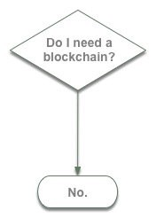

ais meetup
1 Hyped!? Fraud!? A Intro to NFTs and first impressions and discussion to architectural and city related data
\vspace{12pt}
How it works
\vspace{18pt}
Balanced (yet opinionated) Pros and Cons
\vspace{18pt}
Demo
\vspace{18pt}
- Ideas for applying to Architectural and City Data
3 Non Fungible Token
A dime can be exchanged to a dime. Doesn’t matter which dime you hold
=> Fungible
\vspace{9pt}
I can’t exchange my daughter with with another girl.3
=> Non fungible
\vspace{9pt}
- Is it because they have different genes?
- Is it because is it rare (there is only one)?
- Is it because we spent time together?
\vspace{9pt}
A Token that can not be exchanged. You (an address) can claim ownership of that asset.
4 How does it work?
4.1 How does it work?
Using Blockchain.
\vspace{18pt}
A very hard-to-tamper public database.
\vspace{18pt}
The platform writes (declares) that an digital asset is owned by some address.
4.2 picture
 　
　
5 How does it work? 2
You list your asset (image, sound, tweet…) into the blockchain, with the edition number and price.
\vspace{18pt}
People collects the asset by paying that amount of crypto currency to the issuer’s address. The issuer writes down to the blockchain that that this asset belongs to the purchaser’s address.
\vspace{18pt}
- People can swap ownership of that asset in a different amount as the reputation of that asset changes. Usually with some kick back to the original issuer.
6 Wait, but it’s digital…
\vspace{24pt}
Nothing stops you from copying that image into my hard drive. It only let’s you claim that you own it, because of that database that is publicly verifiable.
\vspace{24pt}
…so ?
\vspace{18pt}
Uniqueness and digital. Perhaps the first time the general public is encountering “duplicated yet unique”
7 Critics in the Creative Coding field
7.1 Arturo!!
https://twitter.com/artur0castro
\vspace{9pt}
Arturo is the top contributor of openframeworks so we do want to listen.
\vspace{9pt}
- Generally against the whole blockchain idea
7.2 Arturo!!
8 Others
- Zach Lieberman 4 -> Took his class. One of openframeworks founders.
\vspace{24pt}
\vspace{24pt}
- Alexis Andre 6 -> Nannou (Creative Coding framework for Rust), Sony CSL, ex Media Lab student
9 Ecological Impact
9.1 Very Costly!
PoW based NFT markets are super environmentally inefficient.
Equivalent to Round trip Tokyo-Osaka by car.
\vspace{18pt}
Use PoS based ones are layer 2 solutions.
\vspace{7pt}
\begin{tiny} https://qz.com/1987590/the-carbon-footprint-of-creating-and-selling-an-nft-artwork/ \end{tiny}9.2 info graphic
11 Demo!
12 Usage examples
12.1 Art work trading
12.2 Trading cards
Again using the blockchain as a public database that is hard to tamper. Claim ownership of that asset.
12.3 Membership
A ’gradable’ membership
suggestion: NFT owned membership for ais?
13 Do weed a blockchain?
13.1 Do you need that infrastructure?
- Uber: you can start your own business by driving people around.
\vspace{9pt}
- Uber (the platform) accumulates trust, and centralizes the market place.
\vspace{18pt}
DI sell your art: https://andymakes.itch.io/non-non-fungible-token-collection-archipelagos
13.2 No.

14 Is it innovative?
The concept of claiming uniqueness has been around ever since blockchain, so not so much of a technological breakthrough but application level innovation 7 …
15 AEC Applications
15.1 Contents
Details, Specs
can be used to compensate drafters, makers??
\vspace{24pt}
15.2 Data format
BIM Data GML Data
basically whatever data that traditionally the ownership is unclear..
16 My Interest
Can NFTs own NFTs??
\vspace{24pt}
- Inheritance (chronological relationship)
\vspace{18pt}
- Composition (spatial relationship)
\vspace{24pt}
this becomes more of a smart contract thing to do…
this leads to: https://yasushisakai.com/lmn_architecture.html
17 wrap-up
17.1 Hype?
yep, the whole point is to inflate ’quantitative trust’
17.2 Fraud?
- There are thiefs.
- Ownership in law terms are very gray on minting art work.
- Legislation awaits!
Bibliography
- [graeber2012debt] Graeber, Debt: The first 5000 years, Penguin UK (2012).
Footnotes:
For the history of humanity exchanging humans as fungible tokens, read Debt by David Graeber graeber2012debt
DPI, DI, Decentralized Storage